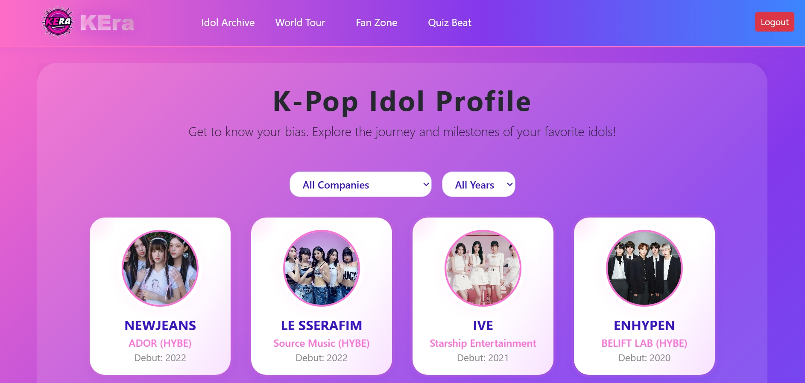
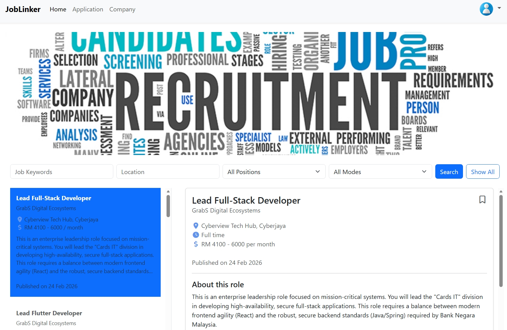
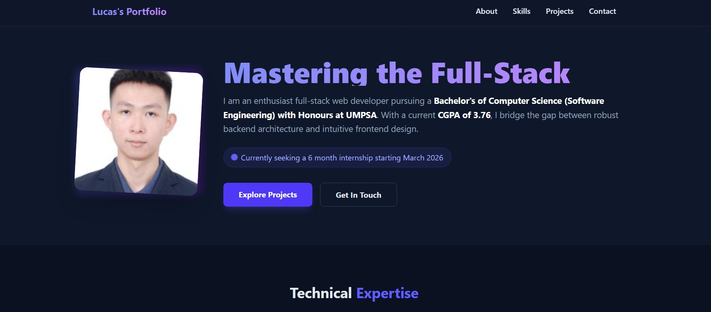
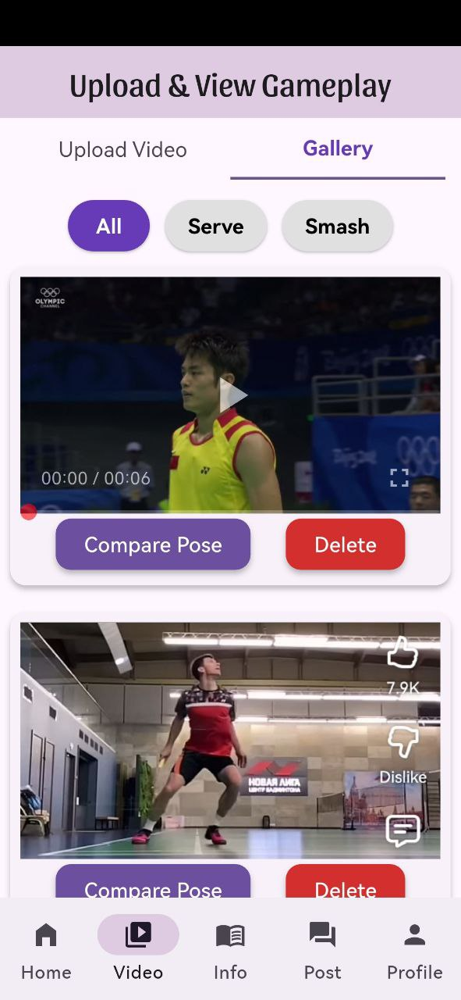

I am an enthusiast full-stack web & mobile developer pursuing a Bachelor's of Computer Science (Software Engineering) with Honours at UMPSA. With a current CGPA of 3.76, I bridge the gap between robust backend architecture and intuitive frontend design.
I always believe that...

KEra-Kpop-Explorer is a full-stack web application designed to explore, discuss and interact with K-pop content. The project consists of a Laravel-based backend, a React-based frontend and a PostgreSQL database. It provides a modern, scalable and interactive platform for K-pop fans. This project consumes also a public API (Ticketmaster API) to publish K-Pop concerts data.

JobLinker is a job recruitment management system for job seekers and employers, built with Laravel, Bootstrap CSS and MySQL. This project demonstrates a full-featured recruitment platform, including job search, application management, resume parsing with OCR and role-based dashboards.

This platform - including the site you are currently navigating, is built with Laravel and Tailwind CSS. This high-performance and modern portfolio website project showcases my journey as a Full-Stack Web Developer, my technical expertise and my featured engineering projects.

Badminton Gesture Analysis is a mobile application designed to demonstrate a mobile-first approach to analyzing badminton gestures using machine learning, particularly CNN. The app allows users to record and analyze their badminton swings, providing insights and feedback to help them self-evaluate and improve their playing technique. The backend is powered by Supabase which handles user authentication, data storage and real-time updates.